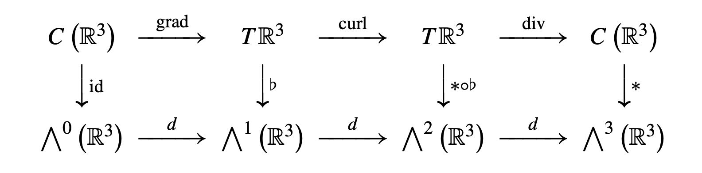
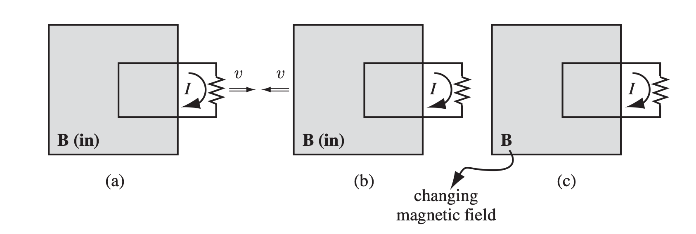
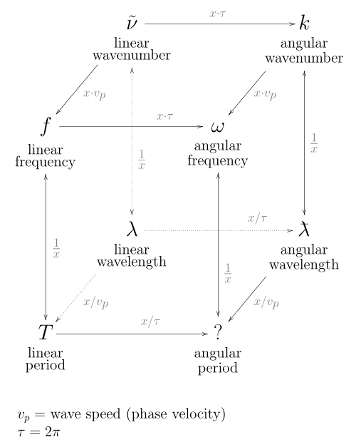

Electromagnetism Crash Course 电磁场与波速成笔记
宇宙安全声明: 本笔记是本人电子科技大学格院大三《电磁场与波》课程的期末考试复习笔记, 遵循个人学习习惯与轨迹, 但我将尝试保留所有概念的动机和尽可能地解释原因, 不保证覆盖全部考点, 不保证严谨性和绝对正确性. 框中的公式比较重要. 本文有较多超出考试范围的内容, 仅供参考.
本文 All Right Reserved 保留所有权利, 禁止商用和任何形式的转载!
1 Change of Mind 这个可能有用
“我们永远无法认识事物本身 (Ding an sich), 我们只能认识它在我们感官和理解结构下所呈现的现象.” — 康德《纯粹理性批判》
- 电磁场从来都不会「传播」: 电磁场本身就是空间中每个点都对应一个矢量, 而且这些矢量会随着时间摇摆, 用二维来做比喻, 就像是风吹过一片草坪, 草坪上每个点的草构成一个时变矢量场, 但草本身并没有「传播」. 我们感觉波在传播是因为波恰好就被画成了空间域周期性的样子, 而且它碰巧又是在时域周期性运动, 当我们一眼看过去的时候, 我们大脑被欺骗地认为是一个波正在往前运动, But there is nothing moving! 波的速度需要人为定义!!!
当波是时空域正弦的时候, 它的移动方向和速度所有人都觉得一样, 但是:
如果波是 Figure 1 的样子呢? 有些人会觉得它速度快, 有些人会觉得它速度慢, 甚至移动的方向每个人看起来都不一样! 所以我们引入了群速度和相速度两个速度来描述波「传播」的快慢.
能流密度的定义是把波的速度当作了相速度时的定义 (所以能量才有了「流动」的概念).
Figure 1: 群速度与相速度
- 波的行为完全由一组偏微分方程 (Maxwell 方程组) 描述
- 电场和磁场为什么会传播? 因为求解偏微分方程后得到的是空间二阶导与时间二阶导 (而不是一阶导) 的方程, 这决定了这两个场的行为是「传播」而不是「扩散」(如果是时间一阶导, 则是扩散, 比如热量).
- 电磁波为什么会反射和折射? 当你写下 Maxwell 方程组的那一刻, 它定义的对象 (电磁波) 就已经会反射和折射了. 设想你轻轻摇动一根绳子, 左行波和右行波 (还有无数其它奇形怪状的波) 都满足振动方程. 如果没有边界条件, 就用右行波当作这个情形的 mental picture 吧. 若将绳子的另一头固定在墙上, 单独一个右行波并不能保证满足这个边界条件, 所以再叠加一个左行波试试, 诶已经可以满足边界条件了! 这个左行波就是反射波, 它完全就是为了满足边界条件而引入的. 所以 反射的本质是为了让偏微分方程的解满足边界条件而引入的修正项 (\(E_r e^{jkz}\)).
- 电磁波不需要一定是一个正弦波的样子, 可以是任何随时间变化的场, 只要满足 Maxwell 方程组就行. 就像水面的波纹也是由一个偏微分方程所描述的, 但水波微澜不定，自有万千形态.
- 那为什么我们好像指讨论过正弦波? 因为正弦波是 Maxwell 方程组的特征解, 其他的解都是特征解的线性组合. 所以只需要研究特征解就行了, 而 Maxwell 方程组的 Phasor 表示就是专门描述特征解的, 所以只需要研究 Phasor 表示就足够.
- 要优雅地理解电磁场理论, 必须引入狭义相对论、四元数 (或 Maxwell 电磁张量). 在经典力学中, 比较难看清电磁场的本质.
2 Vector Analysis 向量分析
2.1 Vector operations 向量运算
Mixed product 混合积: \[ \mathbf{a} \cdot (\mathbf{b} \times \mathbf{c}) = \mathbf{b} \cdot (\mathbf{c} \times \mathbf{a}) = \mathbf{c} \cdot (\mathbf{a} \times \mathbf{b}) \]
BAC-CAB rule 三叉乘 BACK-CAB 规则: \[ \begin{aligned} \mathbf{a} \times (\mathbf{b} \times \mathbf{c}) &= \mathbf{b} (\mathbf{a} \cdot \mathbf{c}) - \mathbf{c} (\mathbf{a} \cdot \mathbf{b}) \\ \nabla \times (\nabla \times \mathbf{A}) &= \nabla (\nabla \cdot \mathbf{A}) - \nabla^2 \mathbf{A} \\ \end{aligned}\]
\(\mathbf{a} \times (\mathbf{b} \times \mathbf{c})\) 的结果在 \(\mathbf{a}\) 和 \(\mathbf{b}\) 的平面内.
三叉乘操作等价于先投影 \(\mathbf{a}\) 再旋转 \(90^\circ\):
空间二阶导算子 \(\nabla^2\)
- 当 \(\nabla^2\) 作用在标量场 \(\psi\) 上时, \(\nabla^2 \psi \equiv \nabla \cdot \nabla \psi\).
- 当 \(\nabla^2\) 作用在向量场上时, 约定为 作用在向量场的每个分量上 (相当于三个标量场). 注意这个时候 $^2 $.
- 引入 \(\nabla^2\) 是因为 \(\nabla^2\) 是二阶导的自然高维推广 (而不是 \(\nabla \times \nabla\)). 用 \(\nabla^2\) 列出的方程的每个分量一般就是二阶一维 PDE. 所以涉及到 \(\nabla^2\) 的方程我们都 component-wise 地求解.
2.2 Vector fields 向量场
约定: 标量场是 \(0\)-form, 向量场是 \(1\)-form, 只考虑三维向量场 \(\omega: \mathbb{R}^3 \to \mathbb{R}^3\).
Gradient, curl, divergence 梯度, 旋度, 散度: 都可看作某种导数:「外微分算子」. 
旋度计算: 用 symbolic 叉乘 (“掐头去尾取中间”, 见 Figure 2).
Figure 2: 叉乘的计算技巧
外微分算子的 Exact 正和性 与 Poincaré’s lemma 庞加莱引理:
Exact 正和性 \(\mathrm{d}^2 = 0\): 梯度无旋, 旋度无散.
Poincaré’s lemma 庞加莱引理: 闭形式一定是恰当形式, 即无旋场一定是梯度场, 无散场一定是旋度场.
Potential 势函数:
- 若恰当形式 \(\alpha = \mathrm{d}\beta\), 则称 \(\beta\) 是 \(\alpha\) 的 (矢)势 (比如磁场, \(\alpha = \mathbf{B}\), \(\beta = \mathbf{A}\))
- 若恰当形式 \(\alpha = -\mathrm{d}\beta\), 则称 \(\beta\) 是 \(\alpha\) 的 (标量)势 (比如电场, \(\alpha = \mathbf{E}\), \(\beta = \varphi\))
恰当形式是不唯一的, 不同的恰当形式之间相差一个 Gauge:
- 若 \(\mathbf{B} = \nabla \times \mathbf{A}\), 则 \(\mathbf{A} + \nabla \psi\) 也是 \(\mathbf{B}\) 的磁势.
- 若 \(\mathbf{E} = -\nabla \varphi\), 则 \(\varphi + c\) 也是 \(\mathbf{E}\) 的电势.
- 不同的 \(\psi\) 和 \(c\) 称为不同的 Gauge (e.g. Coulomb gauge, Lorenz gauge).
Stokes’ theorem 广义斯托克斯定理: 即 Newton–Leibniz theorem 牛顿-莱布尼茨定理 的推广, \(\omega\) 在流形 \(M\) 边界上的积分等于 \(\mathrm{d}\omega\) 在 \(M\) 内部的积分: \[ \int_{\partial M} \omega = \int_M \mathrm{d}\omega \]
- 特例: Gauss’s 定理 和 Green’s 定理.
- Stokes’ 定理可从积分形式的 Maxwell 方程推导出其微分形式, 反之亦然.
3 Magnetostatics 静磁学
3.1 Conduction current 传导电流
- 因电荷运动产生的电流. 每秒通过指定截面的电荷量1 \[I = \frac{\mathrm{d}q}{\mathrm{d}t}.\]
1 这不是 \(I\) 的定义! 国际上用力定义了电流, 再用电流定义了电荷量.
Current density 电流密度: 每秒通过单位截面的电荷量 \[|\mathbf{j}| := \frac{I}{A}.\]
传导电流产生静磁场, 可由以下关系描述:
\[ \begin{aligned} \mathbf{B}(\mathbf{r}) &= \frac{\mu_0}{4\pi} \int \frac{\mathbf{I} \times \mathbf{\hat{r}}}{r^2} \mathrm{d}l' \quad &\text{(Biot-Savart law)} \\ \operatorname{Flow}_C (\mathbf{B}) &= \mu_0 I_{\text{enc}} \quad &\text{(Ampère's law)} \\ \mathbf{\nabla} \times \mathbf{B} &= \mu_0 \mathbf{J} + \mu_0 \varepsilon_0 \frac{\partial \mathbf{E}}{\partial t} \quad &\text{(Ampère's law)} \end{aligned} \]
3.2 Displacement current 位移电流
- 因电场 (电位移矢量) 的变化
4 Capacitance & Inductance 电容与电感
5 \(\mathbf{D}\) 和 \(\mathbf{H}\) 的引入
动机: 静电场和静磁场分别由电荷和恒定电流产生, 而介质中这两者会由于 极化 和 磁化 而发生变化 (激发出额外的 感应电荷 \(\rho_b\) 和 磁化等效电流 \(\mathbf{j}_b\)), 而我们并不关心感应出来的量的变化, 只关心本来的电荷和电流 (称为 自由电荷 \(\rho_f\) 和 自由电流 \(\mathbf{j}_f\)). 我们将他们的变化融入 \(\mathbf{E}\) 和 \(\mathbf{B}\), 得到新的量 \(\mathbf{D}\) 和 \(\mathbf{H}\).
本章假设存在磁单极子.
- Dipole 偶极子
- Electric Dipole 电偶极子: 一正一负两个电荷 \(q\) 组成的整体 或 环形磁流 \(\mathbf{I}_m\)
Electric Dipole Moment 电偶极矩 \(\mathbf{p}\): \[\mathbf{p} := q \mathbf{d} \tag{1}\] 其中 \(\mathbf{d}\) 的方向由负电荷指向正电荷. 这样定义是为了方便计算作用在 dipole 上的力矩: \[\mathbf{\tau} = \mathbf{p} \times \mathbf{E}\]
磁流版本的电偶极矩 \(\mathbf{m}_e\)2: 磁单极子的流动可等效于极化电荷: \[\mathbf{m}_e := I_m \mathbf{A} \tag{2}\] 其中 \(\mathbf{A}\) 是环形磁流的面积向量, \(I_m\) 是磁流大小. 注意 \(\mathbf{m}_e\) 不是 \(\mathbf{p}\), 而是差一个常数: \[\mathbf{p} = \epsilon_0 \mathbf{m}_e\]
Generalized Electric Dipole Moment 广义电偶极矩: 区域 \(V_0\) 内的 任意连续电荷分布 \(\rho(x,y,z)\) 的 电偶极矩 或 任意连续磁流 \(\mathbf{j}_m(x,y,z)\) 版本: \[\begin{aligned}\mathbf{p} &:= \int_{V_0} \rho \mathbf{r} ~\mathrm{d}V \\ \mathbf{m}_e &:= \frac{1}{2} \int_{V_0} \mathbf{r} \times \mathbf{j}_m ~\mathrm{d}V \end{aligned} \tag{3}\]
Electric Dipole Moment Density 电偶极矩密度: 即 Equation 3 在某点的密度: \[\mathbf{P} := \lim_{V_0 \to 0} \frac{\mathbf{p}}{V_0}, \mathbf{M}_e := \lim_{V_0 \to 0} \frac{\mathbf{m}_e}{V_0}\] 因而 \[\mathbf{p} = \int_{V_0} \mathbf{P} ~\mathrm{d}V, \mathbf{m}_e = \int_{V_0} \mathbf{M}_e ~\mathrm{d}V\]
- Magnetic Dipole 磁偶极子: 一正一负两个磁荷 \(q_m\) 组成的整体 或 环形电流 \(\mathbf{I}\), 所有的概念跟上面是完全对称的, 直接给出:
Magnetic Dipole Moment 磁偶极矩 \(\mathbf{p}\): \[\begin{aligned}\mathbf{p}_m &:= q_m \mathbf{d} \\ \mathbf{\tau} &= \mathbf{p}_m \times \mathbf{H} \end{aligned} \tag{4}\]
电流版本的磁偶极矩 \(\mathbf{m}\): \[\begin{aligned}\mathbf{m} &:= I \mathbf{A} \\ \mathbf{p}_m &= \mu_0 \mathbf{m}\end{aligned}\]
Generalized Magnetic Dipole Moment 广义磁偶极矩: \[\begin{aligned}\mathbf{p}_m &:= \int_{V_0} \rho_m \mathbf{r} ~\mathrm{d}V \\ \mathbf{m} &:= \frac{1}{2} \int_{V_0} \mathbf{r} \times \mathbf{j} ~\mathrm{d}V \end{aligned}\]{#eq-m-generalized-dipole-moment}.
Magnetic Dipole Moment Density 磁偶极矩密度: \[\mathbf{P}_m := \lim_{V_0 \to 0} \frac{\mathbf{p}_m}{V_0}, \mathbf{M} := \lim_{V_0 \to 0} \frac{\mathbf{m}}{V_0}\] 因而 \[\mathbf{p}_m = \int_{V_0} \mathbf{P}_m ~\mathrm{d}V, \mathbf{m} = \int_{V_0} \mathbf{M} ~\mathrm{d}V\]
- Electric Dipole 电偶极子: 一正一负两个电荷 \(q\) 组成的整体 或 环形磁流 \(\mathbf{I}_m\)
2 为了对偶我自己发明的词.
动机: 其实就是解决如何定义电偶极矩密度的问题, 偶极子本身就是用点电荷定义的, 密度肯定要用连续电荷分布来定义, 如果电荷是连续的, 还有偶极子吗?
所以我们引入了 Generalized Dipole 广义偶极子3: 广义电偶极子不再是两个正负电电荷的组合或环形磁流, 而是任意 (连续的也行) 的电荷分布 或 磁流 (不需要是环形的) 分布!
然后为了推广 Equation 1 到这个广义偶极子上, 有两个问题要解决:
- 任意离散电荷分布的情况, 电荷没有想电偶极子那样两两配对, 如何定义 \(q\) 和 \(\mathbf{d}\)?
- \(\mathbf{d}\) 可以看作 \(\mathbf{r_1} - \mathbf{r_2}\)
- 连续的情况怎么处理?
- \(q\) 可以看作 \(\rho ~\mathrm{d}V\)
- 最终, \[\mathbf{p} := \int_{V_0} \rho \mathbf{r} ~\mathrm{d}V \tag{5}\]
Figure 3: 电偶极矩的推广 - 任意离散电荷分布的情况, 电荷没有想电偶极子那样两两配对, 如何定义 \(q\) 和 \(\mathbf{d}\)?
为了推广 Equation 2 到这个广义偶极子上
我们先对面积 \(A\) 用以下方法重新表示 (符号见 Figure 4): \[ \begin{aligned} \mathbf{A} &= \sum_i A_i \\ &= \frac{1}{2} \oint \mathbf{r}' \times ~\mathrm{d} \mathbf{l} \\ &= \frac{1}{2} \oint (\mathbf{a}-\mathbf{b}) \times ~\mathrm{d} \mathbf{l} = \frac{1}{2} \oint \mathbf{a} \times ~\mathrm{d} \mathbf{l} - \underbrace{\frac{1}{2} \oint \mathbf{b} \times ~\mathrm{d} \mathbf{l}}_{=0} \\ &= \frac{1}{2} \oint \mathbf{a} \times ~\mathrm{d} \mathbf{l} \\ &= \frac{1}{2} \oint (\mathbf{r} - \mathbf{h}) \times ~\mathrm{d} \mathbf{l} = \frac{1}{2} \oint \mathbf{r} \times ~\mathrm{d} \mathbf{l} - \underbrace{\frac{1}{2} \oint \mathbf{h} \times ~\mathrm{d} \mathbf{l}}_{=0} \\ &= \frac{1}{2} \oint \mathbf{r} \times ~\mathrm{d} \mathbf{l} \end{aligned} \]
Figure 4: 面积的连续化 所以 Equation 2 变成了: \[\mathbf{m}_e = I_m \mathbf{A} = \frac{1}{2} \oint \mathbf{r} \times \mathbf{I}_m ~\mathrm{d}l\]
直接把去掉环路积分, 把 \(\mathbf{I}_m\) 改成 \(\mathbf{j}_m\) 就是广义偶极子的磁流形式: \[\mathbf{m}_e = \frac{1}{2} \int_{V_0} \mathbf{r} \times \mathbf{j}_m ~\mathrm{d}V \tag{6}\]
3 为了逻辑的顺畅自己起的名字.
- Electric Displacement 电位移矢量
Dipole Moment 电偶极矩: 为了研究 dipole 偶极子在均匀电场中的转动, 如果引入电偶极矩: \[\mathbf{p} := q \mathbf{d}\] (\(\mathbf{d}\) 的方向由负电荷指向正电荷), 作用在 dipole 上的力矩将会变得很方便记忆和计算: \[\mathbf{\tau} = \mathbf{p} \times \mathbf{E} \tag{7}\]
电偶极矩的引入最初仅仅是为了让力矩的计算 (Equation 7) 变得方便 感应电荷在介质内部的体密度 \(\rho_b\) 和 介质边界的面密度 \(\rho_{bs}\) 可以被 Dipole Moment Density 偶极矩密度4 \(\mathbf{P}\) 表示:
4 也叫 Polarization Density 极化密度.
6 Electromagnetic Induction 电磁感应
6.1 Faraday’s Law 法拉第定律
-
- Lorentz force 洛伦兹力 (「切割磁感线」): \[ \begin{aligned} \mathbf{F} &= q \mathbf{v} \times \mathbf{B} \\ &= q \mathbf{E} \\ \implies \mathcal{E} &= \oint \mathbf{E} \cdot \mathrm{d}\mathbf{l} = BLv \end{aligned} \]
- Induced electric field 感应电场: \[\operatorname{curl} \mathbf{E} = -\frac{\partial \mathbf{B}}{\partial t}.\]
Figure 5: 法拉第做的三个实验 但这两种机制都产生了 EMF, 且都可以用「磁通量的变化」来描述: \[\mathcal{E} = \operatorname{Flow}_C (\mathbf{E}) = -\frac{\mathrm{d}\Phi}{\mathrm{d}t}.\] 这个巧合直接导致了狭义相对论的出现!
7 Complexification, Phasor and Jones Vector 场的复化, 相量和琼斯矢量
- 简要动机
- Field 场: 空间每一点都附加三个实数 (\(E^x, E^y, E^z\)), 且可以随时间变化.
- Complexification 复化: 场在某一点的每个分量都可以看作一个旋转5的复数的实部. 以 \(E^x\) 为例: \[E^x = \Re (E^x_m e^{j \varphi(t)})\] 其中 \(E^x_m\) 是 \(E^x\) 的最大值, \(\varphi(t)\) 定义了这个复数如何旋转.
- Phasor 相量: 如果场是时谐的 (即每一点的每个分量都是正弦的), 则 \(\varphi(t) = \omega t\), 可以将这部分剥离出来, 剩下的称为Phasor 相量.
- Jones Vector 琼斯矢量: 如果场是不仅是时谐, 还是空谐的, 则可以继续将 \(e^{-jkz}\) 剥离出来 (假设波沿 \(-z\) 方向传播), 剩下的称为Jones 矢量.
5 不能伸缩, 所以要取 \(E^x\) 的最大值作为复数的模长.
- 表格总结6
6 以电场为例.
| Type | Electric Field | Complexified Field | Phasor Field | Jones Vector |
|---|---|---|---|---|
| Description | Original field | Real part of this is the original field | Only record the phase at \(t=0\) | Only record the phase at \(t=0, z=0\) |
| Notation | \(\mathbf{E}=\begin{pmatrix} E^x \\ E^y \\ E^z \\\end{pmatrix}\) | \(\underline{\mathbf{E}}=\begin{pmatrix} \underline{E}^x \\ \underline{E}^y \\ \underline{E}^z \\\end{pmatrix}\) | \(\tilde{\mathbf{E}}=\begin{pmatrix} \tilde{E}^x \\ \tilde{E}^y \\ \tilde{E}^z \\\end{pmatrix}\) | \(J_E=\begin{pmatrix} J_E^x \\ J_E^y \\ J_E^z \\\end{pmatrix}\) |
| Math Nature | \(\mathbb{R}^3 \to \mathbb{R}^3 \times \mathbb{T}\) | \(\mathbb{R}^3 \to \mathbb{C}^3 \times \mathbb{T}\) | \(\mathbb{R}^3 \to \mathbb{C}^3\) | \(\mathbb{CP}^1\) |
| Relation | - | \(\mathbf{E} = \Re{(\underline{\mathbf{E}})}\) | \(\underline{\mathbf{E}} = \tilde{\mathbf{E}} e^{j \omega t}\) | \(\tilde{\mathbf{E}} = J_E e^{-jkz}\) |
| Example | \(\begin{pmatrix} \sin(\omega t - kz -\frac{\pi}{4}) \\ \cos(\omega t - kz -\frac{\pi}{4}) \\ 0 \\\end{pmatrix}\) | \(\begin{pmatrix} -j e^{j(\omega t - kz - \frac{\pi}{4})} \\ e^{j(\omega t - kz - \frac{\pi}{4})} \\ 0 \\\end{pmatrix}\) | \(\begin{pmatrix} -je^{j(-kz - \frac{\pi}{4})} \\ e^{j(-kz - \frac{\pi}{4})} \\ 0 \\\end{pmatrix}\) | \(\begin{pmatrix} -j e^{-j \frac{\pi}{4}} \\ e^{-j \frac{\pi}{4}} \\ 0 \\\end{pmatrix} \equiv [-j:1]\) |
| Time Derivative | \(\frac{\mathrm{d}}{\mathrm{d}t}\) | - | \(j \omega \cdot\) | \(\text{id}(\cdot)\) |
| \(\frac{\mathrm{d}^2}{\mathrm{d}t^2}\) | - | \(-\omega^2 \cdot\) | \(\text{id}(\cdot)\) | |
| Space Derivative | \(\nabla^2\) | - | \(\nabla^2\) | \(\text{id}(\cdot)\) |
| \(\nabla \times\) | - | \(\nabla \times\) | - | |
| \(\nabla \cdot\) | - | \(\nabla \cdot\) | - | |
| \(\Box^2\) | \(\nabla^2 - \epsilon \mu \frac{\partial^2}{\partial t^2}\) | - | \(\nabla^2 + k_c^2, \quad k_c = \omega \sqrt{\epsilon \mu}\) | - |
Phasor 相量
- Time-harmonic 时谐波: 固定空间的任意一点, 这一点的 \(\mathbf{E}\) 和 \(\mathbf{H}\) 的三个分量都是时间的正弦函数.
- 没有说空间上是周期性的!
- Phasor 相量:
- 固定角频率 \(\omega\) 的正弦波集合 在向量空间的意义上 同构于复数域 \(\mathbb{C}\), 对应的复数称为 Phasor 相量
- 为何同构? 每个正弦波只与初始状态有关, 每个初始状态与一个复数一一对应.
- 为何固定角频率? 因为很多系统 (RC 电路, 弹簧振子, etc.) 在正弦输入下所有的物理量 (电压, 电流, 位移, 速度, etc.) 时间上一定是同频的.
- 相量 \(Ae^{j\theta_0}\) 中没有时间信息!
- 对于时谐 EM 波, 我们只关心初始状态, 即相量场: \(\tilde{\mathbf{E}}: \mathbb{R}^3 \to \mathbb{C}^3\) (三维空间的每个点上在三个方向上各有一个相量).
- E.g., 时谐场与相量的转化: \[\begin{pmatrix} E^x \cos(\omega t - z) \\ E^y \sin(\omega t - z) \\ 0 \\\end{pmatrix} \xrightarrow{\text{complexification}} \begin{pmatrix} E^x e^{j(-z)} e^{j\omega t} \\ E^y (-j) e^{j(-z)} e^{j\omega t} \\ 0 \\\end{pmatrix} \xrightarrow{\text{phasor}} \begin{pmatrix} E^x e^{j(-z)} \\ E^y \boxed{(-j)} e^{j(-z)} \\ 0 \\\end{pmatrix}\]
- \(\sin\) 为什么是 \(-j\)? (\(\sin\) 可以看作 \(\cos\) 的求导的相反数, 而求导操作是直接乘 \(j\))
- Time-harmonic 时谐波: 固定空间的任意一点, 这一点的 \(\mathbf{E}\) 和 \(\mathbf{H}\) 的三个分量都是时间的正弦函数.
Jones vector 琼斯矢量
- 动机: 在时谐波的相量表示里, 我们不关心波的频率, 只关心波的初始状态, 所以在相量里我们省略了时间信息 (\(\omega t\)), 只保留了波在每一点的初始相位 (时间意义上的初始), 通过观察这个相位的周期性变化, 所以我们仍然可以在相量中获取波长信息. 但是为了分类偏振状态, 我们也并不关心这个波长信息. 所以我们进一步省略了波长信息, 进一步简化了波的初始状态 (空间意义上的初始), 得到的矢量称为 Jones vector 琼斯矢量.
- 不失一般性, 先要取坐标系使得波沿 \(+z\) 传播 (所以如果是 \(-z\) 方向, 所有结论都要取反!!!)
- Jones 矢量不再是一个场, 而是一个 (复二维) 向量 (由于我们已经让波沿 \(+z\) 传播, 所以 \(z\) 分量为 \(0\), 后面我们会看到, 其实不止一个复二维向量可以对应一种极化方式, 要模掉他们, 得到的是 Spinors 旋量).
- E.g., 时谐场与 Jones 矢量的转化: \[\begin{pmatrix} E^x \cos(\omega t - z) \\ E^y \sin(\omega t - z) \\ 0 \\\end{pmatrix} \xrightarrow{\text{phasor}} \begin{pmatrix} E^x e^{j(-z)} \\ E^y \boxed{(-j)} e^{j(-z)} \\ 0 \\\end{pmatrix} \xrightarrow{\text{Jones}} \begin{pmatrix} E^x \\ E^y (-j) \\\end{pmatrix} \tag{8}\]
- Jones 矢量在 Poincaré Sphere 庞加莱球上7
- 动机: 我们已经知道一种极化方式可以用一个复二维向量表示, 但是我们会发现, 这种表示并不是唯一的. 所以, 对每一种表示, 我们都只留下一个矢量 (模掉一个等价关系 \(\sim\)), 得到的空间为 \(\mathbb{C}^2 / \sim\), 其中的元素才是真正的 Jones 矢量 (也称旋量).
- 等价关系: 两个 Jones 矢量 \(J_1 \sim J_2 :\iff J_1 = \alpha J_2\) for some \(\alpha = A e^{j\theta} \in \mathbb{C}^{\times}\). 其物理意义是:
- 不关心空间初始相位: \[\begin{pmatrix} E^x \\ E^y (-j) \\\end{pmatrix} \sim e^{j\theta} \begin{pmatrix} E^x \\ E^y (-j) \\\end{pmatrix}, \quad \forall \theta \in [0, 2\pi)\]
- 不关心电磁波的振幅: \[\begin{pmatrix} E^x \\ E^y (-j) \\\end{pmatrix} \sim A \begin{pmatrix} E^x \\ E^y (-j) \\\end{pmatrix}, \quad \forall A \in \mathbb{R}^{\times}\]
- 这正是 \(\mathbb{CP}^1\) 的定义! Surprise!!!
- 动机: 在时谐波的相量表示里, 我们不关心波的频率, 只关心波的初始状态, 所以在相量里我们省略了时间信息 (\(\omega t\)), 只保留了波在每一点的初始相位 (时间意义上的初始), 通过观察这个相位的周期性变化, 所以我们仍然可以在相量中获取波长信息. 但是为了分类偏振状态, 我们也并不关心这个波长信息. 所以我们进一步省略了波长信息, 进一步简化了波的初始状态 (空间意义上的初始), 得到的矢量称为 Jones vector 琼斯矢量.
7 名字很多: Riemann Sphere (通用), Bloch Sphere (一般在量子力学中), Poincaré Sphere (电磁学), Complex Projective Line \(\mathbb{CP}^1\) (数学中), Extended Complex numbers \(\mathbb{\hat{C}}\). 其中的元素也叫 Spinors 旋量.
不失一般性, 大部分 Claim 只需证明其中一个分量即可.
Lemma 1: The conjugation operation \(^*\) distributes over \(+\) and \(\cdot\), i.e.,\[\begin{aligned} (z+w)^* &= z^* + w^* \\ (zw)^* &= z^* w^* \end{aligned}\]
Pf. 这是显然的.
Lemma 2: \(\frac{\mathrm{d}}{\mathrm{d}t}\) 与 \(^*\) 可交换, i.e., \[\frac{\mathrm{d}}{\mathrm{d}t} \circ ^* = ^* \circ \frac{\mathrm{d}}{\mathrm{d}t}\]
Pf. 设 \(z(t) = a(t) + jb(t) \in \mathbb{C}\), \[ \begin{aligned} z^*(t) &= a(t) - jb(t) \\ \implies \frac{\mathrm{d}}{\mathrm{d}t} z^*(t) &= \frac{\mathrm{d}}{\mathrm{d}t} (a(t) - jb(t)) = \frac{\mathrm{d} a(t)}{\mathrm{d}t} - j \frac{\mathrm{d} b(t)}{\mathrm{d}t} \\ &= \left(\frac{\mathrm{d}}{\mathrm{d}t} z(t)\right)^* \end{aligned} \]
Q.E.D. (同理可证 \(\frac{\partial}{\partial x}\) 和 \(^*\) 也可交换)
Lemma 3: \(\Re\) 与 \(\frac{\mathrm{d}}{\mathrm{d}t}\) 可交换, i.e., \[\Re \circ \frac{\mathrm{d}}{\mathrm{d}t} = \frac{\mathrm{d}}{\mathrm{d}t} \circ \Re\]
Pf. \(\Re\) 是 \(+\) 和 \(\cdot\) 的组合, 由 Lemma 1 和 Lemma 2 易证.
Claim 1: \(~\tilde{}~\) 与 \(\frac{\mathrm{d}}{\mathrm{d}t}\) 可交换, i.e., \[\widetilde{\frac{\mathrm{d}}{\mathrm{d}t} E^x} = j \omega \tilde{E^x}\]
Pf. 时谐波一定满足: \[ \begin{aligned} E^x &= \Re{(\tilde{E}^x e^{j \omega t})} \\ \implies \frac{\mathrm{d}}{\mathrm{d}t} E^x &= \frac{\mathrm{d}}{\mathrm{d}t} \Re{(\tilde{E}^x e^{j \omega t})} \\ &= \Re{(\tilde{E}^x \frac{\mathrm{d}}{\mathrm{d}t} e^{j \omega t})} \\ &= \Re{(\tilde{E}^x j \omega e^{j \omega t})} \\ \implies\widetilde{\frac{\mathrm{d}}{\mathrm{d}t} E^x} &= j \omega \tilde{E}^x \end{aligned} \]
Q.E.D. (同理可证 \(~\tilde{}~\) 与 \(\frac{\partial}{\partial x}\) 也可交换)
Claim 2: \(~\tilde{}~\) 与 \(\nabla^2\) 可交换, i.e., \[\widetilde{\nabla^2 E^x} = \nabla^2 \tilde{E}^x\]
Pf. \(\nabla^2\) 是 \(\frac{\partial}{\partial x}, \frac{\partial}{\partial y}, \frac{\partial}{\partial z}\) 的复合和线性组合, 由 Claim 1 可证.
Q.E.D. (同理可证 \(~\tilde{}~\) 与 \(\nabla \times\) 和 \(\nabla \cdot\) 也可交换)
另外注意: \[\widetilde{E \times H} \neq \tilde{E} \times \tilde{H}\]
8 Maxwell’s Equations 麦克斯韦方程组
8.1 Without magnetic monopoles 无磁单极子
\[ \nabla \cdot \mathbf{D} = \rho_f \tag{9}\] \[ \nabla \cdot \mathbf{B} = 0 \tag{10}\] \[ \nabla \times \mathbf{E} = -\frac{\partial \mathbf{B}}{\partial t} \tag{11}\] \[ \nabla \times \mathbf{H} = \mathbf{j}_f + \frac{\partial \mathbf{D}}{\partial t} \tag{12}\]
- Source-free 无源: 没有自由电荷, i.e., \(\rho_f = 0\).
- Lossless 无损: 当 \(\mathbf{E}\) 存在时不会产生电流, i.e., \(\mathbf{j}_f = 0\) or \(\sigma = 0\).
- Source-free Lossless Maxwell’s equations 无源无损介质的麦克斯韦方程组: \[ \begin{cases} \nabla \cdot \mathbf{D} &= 0 \\ \nabla \cdot \mathbf{B} &= 0 \\ \nabla \times \mathbf{E} &= -\frac{\partial \mathbf{B}}{\partial t} \\ \nabla \times \mathbf{H} &= \frac{\partial \mathbf{D}}{\partial t} \\ \end{cases} \tag{13}\]
- Ideal conductor 理想导体: 当 \(\mathbf{E}\) 存在时, 电流无穷大 (所以不能存在 \(\mathbf{E}\)), i.e., \(\sigma = \infty\).
8.2 With magnetic monopoles 有磁单极子
\[ \begin{cases} \nabla \cdot \mathbf{D} &= \rho_f \\ \nabla \cdot \mathbf{B} &= \rho_{mf} \\ \nabla \times \mathbf{E} &= -\mathbf{j}_{mf} -\frac{\partial \mathbf{B}}{\partial t} \\ \nabla \times \mathbf{H} &= \mathbf{j}_f + \frac{\partial \mathbf{D}}{\partial t} \\ \end{cases} \]
- \(\rho_{mf}\): 自由磁荷密度, \(\mathbf{j}_{mf}\): 自由磁流密度
8.3 Potential functions 势函数的麦克斯韦方程组
我们希望通过引入势函数来将 Maxwell 方程变成只有两个 (称为 D’Alembert 方程).
我们拿出 Maxwell 方程组的中间两个 (Equation 10 和 Equation 11) 来定义8 \(\mathbf{A}\) 和 \(\varphi\): \[ \begin{cases} \nabla \cdot \mathbf{B} &= 0 \\ \nabla \times \mathbf{E} &= -\frac{\partial \mathbf{B}}{\partial t} \end{cases} \implies \boxed{ \begin{cases} \mathbf{B} &=: \nabla \times \mathbf{A} \\ \mathbf{E} &=: -\frac{\partial \mathbf{A}}{\partial t} - \nabla \varphi \end{cases} } \tag{14}\]
- 由 \(\mathbf{B}\) 的无散性 (Equation 10) 可引入磁势 \(\mathbf{A}\).
- 代入到 Equation 11 由 \(\mathbf{E}+\frac{\partial \mathbf{A}}{\partial t}\) 的无旋性可引入电势 \(\varphi\).
8 说是定义, 其实没有 well-defined, 因为对于给定的 \(\mathbf{B}\), 有无数个磁势 \(\mathbf{A}\) 可以选择 (通过不同的 Gauge). 但是一旦选择了 \(\mathbf{A}\) 的 Gauge, 由 Equation 14 中右边的第二个式子可知 \(\varphi\) 和 \(\mathbf{A}\) 是关联在一起的, 所以 \(\varphi\) 的 Gauge 也就随之确定了 (这叫做 Gauge 变换).
- Gauge 变换: 由 Section 2.2 有关 Gauge 的介绍可知: \(\varphi\) 和 \(\mathbf{A}\) 都不是唯一的, 他们可以分别选择各自的 Gauge 吗? 不能! 由 Equation 14 知: \(\mathbf{A}\) 和 \(\varphi\) 是关联在一起的, 当 \(\mathbf{A}\) 变化时, \(\varphi\) 必须跟着变, 稍加推导可得: \[ \begin{aligned} A \to A + \nabla \psi \\ \varphi \to \varphi - \frac{\partial \psi}{\partial t} \end{aligned} \tag{15}\]
两个势 (\(\mathbf{A}\) 和 \(\varphi\)) 由以下式子相关联: \[ \mathbf{E} =: -\frac{\partial \mathbf{A}}{\partial t} - \nabla \varphi \]
当 \(\mathbf{A}\) 变化成 \(\mathbf{A} + \nabla \psi\) 时, 假设 \(\varphi\) 变成了 \(\varphi'\). 不管 \(\mathbf{A}\), \(\varphi\) 怎么变, \(\mathbf{E}\) 都不能变, 即: \[ \begin{aligned} -\frac{\partial \mathbf{A}}{\partial t} - \nabla \varphi &= -\frac{\partial (\mathbf{A} + \nabla \psi)}{\partial t} - \nabla \varphi' \\ &= -\frac{\partial \mathbf{A}}{\partial t} - \nabla \frac{\partial \psi}{\partial t} - \nabla \varphi' \\ &= -\frac{\partial \mathbf{A}}{\partial t} - \nabla (\varphi' + \frac{\partial \psi}{\partial t}) \\ \implies \varphi &= \varphi' + \frac{\partial \psi}{\partial t} \\ \implies \varphi' &= \varphi - \frac{\partial \psi}{\partial t} \end{aligned} \]
Q.E.D.
我们把剩下两个方程 (Equation 9 和 Equation 12) 用 Equation 14 中的 \(\mathbf{A}\) 和 \(\varphi\) 替换掉, 得到 D’Alembert 方程: \[ \begin{cases} \nabla \cdot \mathbf{D} &= \rho_f \\ \nabla \times \mathbf{H} &= \mathbf{j}_f + \frac{\partial \mathbf{D}}{\partial t} \end{cases} \implies \begin{cases} \epsilon \mu \frac{\partial^2 \varphi}{\partial t^2} - \nabla^2 \varphi &= \frac{1}{\epsilon} \rho_f \\ \epsilon \mu \frac{\partial^2 \mathbf{A}}{\partial t^2} - \nabla^2 \mathbf{A} &= \mu \mathbf{j}_f - \nabla (\nabla \cdot \mathbf{A} + \epsilon \mu \frac{\partial \varphi}{\partial t}) \end{cases} \tag{16}\]
- D’Alembert 算子: 这个算子经常以整体出现, 是 Minkowski 时空 上的 Laplace 算子9: \[\boxed{\Box^2 \equiv \nabla^2 - \epsilon \mu \frac{\partial^2}{\partial t^2}}\]
9 有地方也省略平方, 或定义为相反数 (sign convention)
Equation 16 几乎快要对称10了, 但是第二个式子过于魔怔, 我们希望通过选择一个合适的 Gauge, 使后面的 \(- \nabla (\nabla \cdot \mathbf{A} + \epsilon \mu \frac{\partial \varphi}{\partial t})\) 消失掉.
Lorenz gauge 洛伦兹规范11: \[\boxed{\nabla \cdot \mathbf{A} + \epsilon \mu \frac{\partial \varphi}{\partial t} = 0} \tag{17}\] Equation 16 变为 (\(4\) 维 Poisson 方程, 非常 nice!): \[ \boxed{ \begin{cases} \Box^2 \varphi = - \frac{1}{\epsilon} \rho_f \\ \Box^2 \mathbf{A} = - \mu \mathbf{j}_f \end{cases} } \tag{18}\]
Coulomb gauge 库伦规范: \[\boxed{\nabla \cdot \mathbf{A} = 0} \tag{19}\] Equation 16 变为: “rubbish” ╯°Д°）╯ \[ \begin{cases} \Box^2 \varphi = -\frac{1}{\epsilon} \rho_f \\ \Box^2 \mathbf{A} = \nabla (\epsilon \mu \frac{\partial \varphi}{\partial t}) - \mu \mathbf{j}_f \end{cases} \]
10 为什么这里的 \(\mu\) 好像对应的是 \(1/\epsilon\)? 不是说 \(\mu\) 应该对应 \(\epsilon\) 吗? 原因是 \(\varphi\) 和 \(\mathbf{A}\) 就不是「对应」的. \(\varphi\) 用来定义了 \(\mathbf{E}\), 照理来说 \(\mathbf{E}\) 对应 \(\mathbf{H}\), 所以应该定义 \(\nabla \times \mathbf{A} := \mathbf{H}\), 但没这么做, 导致这个地方没有完全对称.
11 此 Lorenz 非彼 Lorentz (. 而且这个式子并没有显式地给出 \(\psi\) 是什么, 事实上能不能这样做是需要验证的, 如果存在合法的 \(\psi\) 才能这么做! 所以我们后面对其进行了合法性验证.
我们需要证明 Equation 17 和 Equation 19 中确实定义了 \(\psi\) (也许没有唯一定义, 但我们至少得证明存在一个合法的 \(\psi\)).
Equation 17 的合法性验证:
将 Equation 15 代入 Equation 17, 得到: \[ \begin{aligned} \nabla \cdot (\mathbf{A} + \nabla \psi) + \epsilon \mu \frac{\partial}{\partial t} (\varphi - \frac{\partial \psi}{\partial t}) &= 0 \\ \implies \underbrace{\nabla \cdot \mathbf{A} + \epsilon \mu \frac{\partial \varphi}{\partial t}}_{0} + \nabla \cdot \nabla \psi - \epsilon \mu \frac{\partial^2 \psi}{\partial t^2} &= 0 \\ \implies \nabla^2 \psi - \epsilon \mu \frac{\partial^2 \psi}{\partial t^2} &= 0 \\ \implies \Box^2 \psi &= 0 \end{aligned} \]
所以这样的 \(\psi\) 肯定是存在的, 只要满足 \[\boxed{\Box^2 \psi = 0}\] 所以 Equation 17 是合法的.
Equation 19 的合法性验证:
将 Equation 15 代入 Equation 19, 得到: \[ \begin{aligned} \nabla \cdot (\mathbf{A} + \nabla \psi) &= 0 \\ \implies \underbrace{\nabla \cdot \mathbf{A}}_{0} + \nabla^2 \psi &= 0 \\ \implies \nabla^2 \psi &= 0 \end{aligned} \]
同理, 这样的 \(\psi\) 肯定也是存在的, 只要满足 \[\boxed{\nabla^2 \psi = 0}\] 所以 Equation 19 也是合法的.
8.4 Phasor representation 相量麦克斯韦方程组12
\[ \begin{cases} \nabla \cdot \mathbf{D} &= \rho_f \\ \nabla \cdot \mathbf{B} &= 0 \\ \nabla \times \tilde{\mathbf{E}} &= -j \omega \tilde{\mathbf{B}} \\ \nabla \times \tilde{\mathbf{H}} &= \tilde{\mathbf{j}}_f + j \omega \tilde{\mathbf{D}} \\ \end{cases} \tag{20}\]
由于时谐波的情况下产生的电流 \(\mathbf{j}_f\) 一定也是时谐的: \(\tilde{\mathbf{j}}_f = \sigma \tilde{\mathbf{E}}\), 我们代入 Equation 20, 得到:
\[ \begin{cases} \nabla \cdot \mathbf{D} &= \rho_f \\ \nabla \cdot \mathbf{B} &= 0 \\ \nabla \times \tilde{\mathbf{E}} &= -j \omega \tilde{\mathbf{B}} \\ \nabla \times \tilde{\mathbf{H}} &= (\sigma + j \omega \epsilon) \tilde{\mathbf{E}} \\ &=: j \omega \epsilon_c \tilde{\mathbf{E}} \\ \end{cases} \tag{21}\]
Complex permittivity 复介电常数 \(\epsilon_c\)
动机: 由于无损介质 (\(\sigma = 0\)) 中第四个 Maxwell 方程是 \[\nabla \times \mathbf{H} = j \omega \epsilon \tilde{\mathbf{E}}\] 我们希望在有损介质的情况下也有形式上完全一样的方程.
\(\epsilon_c\) 与频率有关13: \[\boxed{\epsilon_c = \epsilon - j \frac{\sigma}{\omega}}\]
13 就像电容或电感的阻抗 \(Z\) 也与频率有关.
12 Phasor representation 只是 Maxwell 方程组在「时谐」下的特例. 但由于 Fourier 变换, 仅仅考虑这种特例已经足够了 (“faithfully”).
9 Maxwell’s Equations Solution 麦克斯韦方程组的解
9.1 波在单一无源介质中的传播
9.1.1 \(\mathbf{E}\) 和 \(\mathbf{H}\) 单独的表现 (解耦合)
- Equation 11, Equation 12 是经典的两个变量的耦合方程, 显然他的解是波动的, 联立它们 (还有 \(\rho_f = 0, \mathbf{j}_f = \sigma \mathbf{E}\)), 解耦合得到:
- 时域化简结果: \[ \begin{cases} \nabla^2 \mathbf{E} - \mu \sigma \frac{\partial \mathbf{E}}{\partial t} - \epsilon \mu \frac{\partial^2 \mathbf{E}}{\partial t^2} &= 0 \\ \nabla^2 \mathbf{H} - \mu \sigma \frac{\partial \mathbf{H}}{\partial t} - \epsilon \mu \frac{\partial^2 \mathbf{H}}{\partial t^2} &= 0 \end{cases} \tag{22}\]
- 相量域化简结果: 根据 Table 1, 可将 Equation 22 转换为相量形式 (也可以直接联立 Equation 21): \[ \begin{cases} \nabla^2 \tilde{\mathbf{E}} + k_c^2 \tilde{\mathbf{E}} &= 0 \\ \nabla^2 \tilde{\mathbf{H}} + k_c^2 \tilde{\mathbf{H}} &= 0 \end{cases} \tag{23}\] 其中 \[\boxed{k_c = \omega \sqrt{\epsilon_c \mu}}\] 注意 Equation 22 的耗散项 \(-\sigma \mu \frac{\partial \mathbf{E}}{\partial t}\) 融入进了复介电常数 \(\epsilon_c\) 里面.
将 Equation 11 再套一层旋度, 得到:
\[ \nabla \times (\nabla \times \mathbf{E}) = - \frac{\partial}{\partial t} (\nabla \times \mathbf{B}) \tag{24}\]
无源条件 (\(\nabla \cdot \mathbf{E} = 0\)) 下,
\[ \begin{aligned} \text{LHS} &= \nabla \times (\nabla \times \mathbf{E}) = \nabla (\nabla \cdot \mathbf{E}) - \nabla^2 \mathbf{E} = -\nabla^2 \mathbf{E} \\ \text{RHS} &= - \frac{\partial}{\partial t} (\nabla \times \mathbf{B}) = -\frac{\partial}{\partial t} (\mu \mathbf{j}_f + \epsilon \mu \frac{\partial E}{\partial t}) = -\frac{\partial}{\partial t} (\mu \sigma \mathbf{E} + \epsilon \mu \frac{\partial E}{\partial t}) \end{aligned} \]
由 \(\text{LHS} = \text{RHS}\) 得到: \[ \nabla^2 \mathbf{E} - \mu \sigma \frac{\partial \mathbf{E}}{\partial t} - \epsilon \mu \frac{\partial^2 \mathbf{E}}{\partial t^2} = 0 \tag{25}\]
同理可得:
\[ \nabla^2 \mathbf{H} - \mu \sigma \frac{\partial \mathbf{H}}{\partial t} - \epsilon \mu \frac{\partial^2 \mathbf{H}}{\partial t^2} = 0 \]
现在推导 Equation 23, 有两种方法:
从 Equation 21 开始, 直接联立得到. (Omitted)
从 Equation 25 开始, 用 Table 1 将其转换到相量表示: \[ \begin{aligned} \nabla^2 \mathbf{E} - \mu \sigma \frac{\partial \mathbf{E}}{\partial t} - \epsilon \mu \frac{\partial^2 \mathbf{E}}{\partial t^2} &= 0 \\ \implies \nabla^2 - \mu \sigma j \omega \tilde{\mathbf{E}} - \epsilon \mu (-\omega^2) \tilde{\mathbf{E}} &= 0 \\ \implies \nabla^2 \tilde{\mathbf{E}} + \mu \omega^2 (\epsilon - j \frac{\sigma}{\omega}) \tilde{\mathbf{E}} &= 0 \\ \implies \nabla^2 \tilde{\mathbf{E}} + \epsilon_c \mu \omega^2 \tilde{\mathbf{E}} &= 0 \end{aligned} \] \(\mathbf{H}\) 同理.
若无源无损 (\(\sigma = 0\)), 则 Equation 22 变为:
时域化简结果: (右边的是 \(4\) 维的 Laplace 方程描述) \[ \boxed{ \begin{cases} \nabla^2 \mathbf{E} - \epsilon \mu \frac{\partial^2 \mathbf{E}}{\partial t^2} &= 0 \\ \nabla^2 \mathbf{H} - \epsilon \mu \frac{\partial^2 \mathbf{H}}{\partial t^2} &= 0 \\ \end{cases} \quad \text{or} \begin{cases} \Box^2 \mathbf{E} = 0 \\ \Box^2 \mathbf{H} = 0 \\ \end{cases} } \tag{26}\]
相量域化简结果: 与有损介质中的 Equation 23 一样 (这就是用复数的好处!), 只不过 \(\epsilon_c\) 退化为了 \(\epsilon\): \[k_c = \omega \sqrt{\epsilon \mu}\]
Phase velocity 相速度
将 Equation 26 与波动方程的一般形式比较, 可知相速度 \[\boxed{v = \frac{1}{\sqrt{\epsilon \mu}}}\]
- 一般我们说的「波速」就是指相速度. 光在 \(T\) 时间里刚好走了一个波长 \(\lambda\) (见 Figure 6), 所以波速就是: \[\boxed{v := \frac{\lambda}{T} = \lambda f} \tag{27}\]
- 光速: 真空中的波速. 神说「要有光」:\[c = \frac{1}{\sqrt{\epsilon_0 \mu_0}}.\]
- 特例: 对于 \(\epsilon_r, \mu_0\) 的介质, 波速为 \[v = \frac{1}{\sqrt{\epsilon_r \epsilon_0 \mu_0}} = \frac{c}{\sqrt{\epsilon_r}}\]
复值二阶 ODE (Equation 23) 解的结构:
设 \(\mathbf{E}\) 是平行于 \(z\) 传播的水平偏振时谐波, \(\tilde{\mathbf{E}}: \mathbb{R}^3 \to \mathbb{C}^3\) 为其相量场, 我们只考虑其 \(x\) 分量 \(f \equiv \tilde{E}^x: \mathbb{R}^3 \to \mathbb{C}\), 满足: \[ \frac{\partial^2}{\partial z^2} f + k_c^2 f = 0 \] 这是一个复值二阶 ODE, 其通解为: \[ f = \underbrace{A e^{j k_c z}}_{-z \text{ direction}} + \underbrace{B e^{-j k_c z}}_{+z \text{ direction}} \] Let \(\gamma := j k_c = \alpha + j \beta\), 则有: \[ \begin{aligned} f &= A e^{(\alpha + j \beta) z} + B e^{-(\alpha + j \beta) z} \\ &= A e^{\alpha z} e^{j \beta z} + B e^{-\alpha z} e^{-j \beta z} \\ \end{aligned} \] 这是一个衰减和一个增大的复指数信号.
时域 (或空间域) 复指数信号是形如 \(e^{\gamma t}\) (或 \(e^{\gamma z}\)) 的函数, 振荡衰减波是其实部. 其中 \(\gamma = \alpha + j \beta\) 是一个复数. 其参数含义如下:
Phase constant 相位常数 \(\beta\): \(1 \text{ s}\) (或 \(1 \text{ m}\)) 内复化波转了多少度. 其实就是角波数14 \(k\).
- Phase factor 相位因子: \(e^{j \beta t}\) (或 \(e^{j \beta z}\))
Attenuation / Decay constant 衰减常数 \(\alpha\): 表示在任意时间 \(t\) (或任意位置 \(z\)), 若保持当前的衰减速率, \(1\text{ s}\) (或 \(1\text{ m}\)) 内能够衰减当前数量的多少倍.
- Attenuation factor 衰减因子: \(e^{-\alpha t}\) (或 \(e^{-\alpha z}\))
Time constant 时间常数15 \(\tau := 1/\alpha\): 表示在任意时间 \(t\) (或任意位置 \(z\)), 若保持当前的衰减速率, 衰减完毕所需要的时间 (或空间距离).
Half life 半衰期 \(t_{1/2} := \ln 2 \cdot \tau\): 表示在任意时间16 \(t\) (或任意位置 \(z\)), 若保持当前的衰减速率, 衰减到一半所需要的时间 (或空间距离).
16 这些参数居然跟具体处于什么时间 (或空间) 无关! 比如一堆放射性元素, 刚开始的时候放射性元素很多, 衰减得很快, 以这个速度衰减一半需要的时间是 \(t_{1/2}\). 但过一段时间, 放射性元素的数量减少了, 衰减速度变慢了, 但以这个速度衰减一半所需要的时间还是 \(t_{1/2}\)! 这个性质叫做 Self-similarity 自相似性.
15 空间的话其实应该叫「空间常数」. 时间常数之于衰减常数如同: 频率 \(f\) 之于周期 \(T\), 波长 \(\lambda\) 之于线波数 \(\tilde{\nu}\).
14 其实就是角波数 \(k\).
9.1.2 \(\mathbf{E}\) 和 \(\mathbf{H}\) 的关系
本章只研究17 无源介质中向 \(+z\) 传播的水平偏振 (\(\mathbf{E}\) 只有 \(x\) 分量) 的时谐平面波.
17 这种波是 Maxwell 方程组的特殊解, 而且比较常见.
Intrinsic Impedance 特征阻抗 \(\eta_c\): 在这种情况下, \(\mathbf{E}\) 和 \(\mathbf{H}\) 始终垂直, 且它们的相位和幅度关系由复数 \(\eta_c\) 衡量: \[ \boxed{ \eta_c := \frac{\tilde{E}^x}{\tilde{H}^y} = \sqrt{\frac{\mu}{\epsilon_c}}} \tag{28}\]
- \(\eta_c\) 的单位恰好为 \(\Omega\): \(E: [\text{V/m}], H: [\text{A/m}]\).
- 无损介质中 \(\eta_c\) 退化为实数, 即 \[\eta = \frac{E}{H} = \sqrt{\frac{\mu}{\epsilon}} \tag{29}\] 表明 无损介质中 \(\mathbf{E}\) 和 \(\mathbf{H}\) 是同相的 (见 Figure 7). 而且我们有:
- \(E\) 恰好是 \(B\) 的波速倍: \[\boxed{\frac{E}{B} = \frac{E}{\mu H} = \frac{1}{\sqrt{\epsilon \mu}} = v}\]
- 真空中的特征阻抗: \[\eta_0 = \sqrt{\frac{\mu_0}{\epsilon_0}} \approx 377 ~\Omega\] 说明一般情况下 \(E\) 都要比 \(H\) 大很多.
设该电磁波是:
- 沿 \(+z\) 方向传播的平面波
- 水平偏振, 即 \(\mathbf{E}\) 只有 \(x\) 分量, \(\mathbf{H}\) 只有 \(y\) 分量.
- 时谐, 但随空间指数衰减18 (因为有损介质 \(\sigma \neq 0\)).
\[ \tilde{\mathbf{E}} = \begin{pmatrix} \tilde{E}^x \\ 0 \\ 0 \end{pmatrix}, \quad \tilde{\mathbf{H}} = \begin{pmatrix} 0 \\ \tilde{H}^y \\ 0 \end{pmatrix} \]
代入 Equation 11 (或 Equation 12, 再用 Table 1 翻译成相量表示): \[ \begin{aligned} \nabla \times \tilde{\mathbf{E}} &= -\frac{\partial}{\partial t} \tilde{\mathbf{B}} \\ \implies \begin{pmatrix} 0 \\ (- \gamma) \tilde{E}^x \\ 0 \end{pmatrix} &= \begin{pmatrix} 0 \\ (-j \omega) \tilde{B}^y \\ 0 \end{pmatrix} \\ \implies \frac{\tilde{E}^x}{\tilde{B}^y} &= \frac{j \omega}{\gamma} = \frac{j \omega}{j k_c} = \frac{\omega}{k_c} = \frac{\omega}{\omega \sqrt{\epsilon_c \mu}} = \frac{1}{\sqrt{\epsilon_c \mu}} \\ \implies \frac{\tilde{E}^x}{\tilde{H}^y} &= \frac{\mu}{\sqrt{\epsilon_c \mu}} = \sqrt{\frac{\mu}{\epsilon_c}} =: \eta_c \end{aligned} \]
18 不能假设空谐!
- 电磁波的能量密度: 在无损介质中, 空间中某一点的能量密度有电场和磁场的贡献: \[\boxed{u = \frac{1}{2} \epsilon E^2 + \frac{1}{2} \mu H^2}\]
- 由 Equation 29 可知: 电场和磁场贡献的能量是一样的: \[\boxed{\frac{1}{2} \epsilon E^2 = \frac{1}{2} \mu H^2}\]
- 由于 \(E\) 和 \(H\) 在每一点都是不一样的, 假设是时谐波, 我们想求出空间中某一点 \(u\) 的时间平均值. 只考虑电场, 其平均值为 \(\epsilon E_m^2/4\), 再乘 \(2\) 得: \[\langle u \rangle = \frac{1}{2} \epsilon E_m^2 \tag{30}\]
- Energy Flux Density 能流密度: 单位时间流过单位面积的能量 (即单位面积的功率, 也叫 Intensity 强度), 由于 \(1\text{ s}\) 内单位面积吸收了数值上为波速 \(v\) 长度的能量, 只需要将 Equation 30 放大 \(v\) 倍: \[I := \text{Energy Flux Density} = \frac{1}{2} v \epsilon E_m^2\]
- Poynting vector \(\mathbf{S}\): 一个矢量, 我们希望用它的方向表征能量流动的方向, 长度的时间平均代表能流密度. 可以证明以下定义可同时满足这两个需求: \[\boxed{\mathbf{S} := \mathbf{E} \times \mathbf{H}} \tag{31}\]
- \(\langle S \rangle\) 与能流密度的关系: \[\langle S \rangle = I = \frac{1}{2} v \epsilon E_m^2\]
- \(\langle \mathbf{S} \rangle\) 的相量表示: \[\boxed{\langle \mathbf{S} \rangle = \frac{1}{2} \Re (\tilde{\mathbf{E}} \times \tilde{\mathbf{H}}^*)} \tag{32}\]
首先 \(\mathbf{S}\) 的方向肯定是波传播的方向, 我们只需要验证其长度的时间平均值是能流密度.
\[ \begin{aligned} S &= EH = \frac{E^2}{\eta} \\ \implies \langle S \rangle &= \frac{1}{2} \frac{E_m^2}{\eta} \\ &= \frac{1}{2} \sqrt{\frac{\epsilon}{\mu}} E_m^2 \\ &= \frac{1}{2} \epsilon \sqrt{\frac{1}{\epsilon \mu}} E_m^2 \\ &= \frac{1}{2} \epsilon v E_m^2 = \text{Energy Flux Density} \end{aligned} \]
Pf.
\[ \begin{aligned} \mathbf{S} = \mathbf{E} \times \mathbf{H} &= \Re{(\tilde{\mathbf{E}} e^{j \omega t}) \times \Re{(\tilde{\mathbf{H}} e^{j \omega t})}} \\ &= \frac{1}{2} \left(\tilde{\mathbf{E}} e^{j \omega t} + \tilde{\mathbf{E}}^* e^{-j \omega t}\right) \times \frac{1}{2} \left(\tilde{\mathbf{H}} e^{j \omega t} + \tilde{\mathbf{H}}^* e^{-j \omega t}\right) \\ &= \frac{1}{4} \left(\tilde{\mathbf{E}} \times \tilde{\mathbf{H}} e^{2 j \omega t} + \tilde{\mathbf{E}} \times \tilde{\mathbf{H}}^* + \tilde{\mathbf{E}}^* \times \tilde{\mathbf{H}} + \tilde{\mathbf{E}}^* \times \tilde{\mathbf{H}}^* e^{-2 j \omega t}\right) \\ \implies \langle \mathbf{S} \rangle = \langle \mathbf{E} \times \mathbf{H} \rangle &= \frac{1}{4} \left(\tilde{\mathbf{E}} \times \tilde{\mathbf{H}}^* + \tilde{\mathbf{E}}^* \times \tilde{\mathbf{H}}\right) \\ &= \frac{1}{4} \left(\tilde{\mathbf{E}} \times \tilde{\mathbf{H}}^* + \left(\tilde{\mathbf{E}} \times \tilde{\mathbf{H}}^*\right)^*\right) \\ &= \frac{1}{2} \Re (\tilde{\mathbf{E}} \times \tilde{\mathbf{H}}^*) \end{aligned} \]
Q.E.D.
9.2 平面波经过两种介质的界面
- 一个时谐波 \(\mathbf{E}_i\) 从介质 1 入射 (Incident) 介质 2 时, 会发生反射 (Reflect) 和折射 (继续传播, Transmit), 这两种波的相量与入射波相量和介质的性质有关:
- Reflection coefficient 反射系数: \[\boxed{\Gamma := \frac{\tilde{E}_r}{\tilde{E}_i} = \frac{\eta_{2c} - \eta_{1c}}{\eta_{2c} + \eta_{1c}}} \tag{33}\] 有些地方 ([1]) 把反射系数定义为反射的能量占比: \[R := \left| \Gamma \right|^2 = \left| \frac{\eta_{2c} - \eta_{1c}}{\eta_{2c} + \eta_{1c}} \right|^2\]
- Transmission coefficient 透射系数: \[\boxed{\tau := \frac{\tilde{E}_t}{\tilde{E}_i} = \frac{2 \eta_{2c}}{\eta_{2c} + \eta_{1c}}} \tag{34}\] 也可以用能量占比来定义: \[T := \left| \tau \right|^2 = \left| \frac{2 \eta_{2c}}{\eta_{2c} + \eta_{1c}} \right|^2\]
- 能量守恒: \[R + T = 1\]
利用切向边界条件:
\[ \begin{aligned} &\begin{cases} \tilde{E}_{1t} &= \tilde{E}_{2t} \\ \tilde{H}_{1t} &= \tilde{H}_{2t} \end{cases} \\ \implies & \begin{cases} \tilde{E}_i + \tilde{E}_r &= \tilde{E}_t \\ \tilde{H}_i - \tilde{H}_r &= \tilde{H}_t \end{cases} \\ \implies & \begin{cases} \tilde{E}_i + \tilde{E}_r &= \tilde{E}_t \\ \frac{\tilde{E}_i - \tilde{E}_r}{\eta_{1c}} &= \frac{\tilde{E}_t}{\eta_{2c}} \end{cases} \end{aligned} \]
求解即可得到 Equation 33 和 Equation 34.
反射的本质是为了让偏微分方程的解满足边界条件而引入的修正项, 如果不引入 \(\tilde{E}_r\), 则由切向边界条件得:
\[ \begin{cases} \tilde{E}_i &= \tilde{E}_t \\ \frac{\tilde{E}_i}{\eta_{1c}} &= \frac{\tilde{E}_t}{\eta_{2c}} \end{cases} \]
这是无解的.
10 Harmonic Waves 谐波
10.1 Wave parameters 波参数
EM 波并不都是 Harmonic 的. 可以在空间上周期, 也可以在时间上周期.
谐波在 「空间」 和 「时间」 都是周期性的振动, 怎么描述这种振动的快慢呢:
单位长度 (或 时间) 内振了几下.
- (linear) wave number 波数 \(\tilde{\nu}\): \(1\text{ m}\) 内振了几下.
- frequency 频率 \(f\): \(1\text{ s}\) 内振了几下.
振一下花了多少长度 (或 时间).
- wavelength 波长 \(\lambda\): 振一下占了多少米.
- period 周期 \(T\): 振一下花了多久.
以上二者度量方法相反, 显然数值上互为倒数: \(\tilde{\nu} = 1/\lambda, f = 1/T\).
角度的世界: 周期性的东西可以很自然的 wind up to 一个圆上, 度量方式也从「振了几下」变成了「转了多少度」. 每振一下对应 \(2\pi\). 所以以上四个概念通通可翻译成角度世界的度量: 乘 \(2\pi\).
angular wave number 角波数 \(k\), angular frequency 角频率 \(\omega\), angular wavelength 角波长 \(\bar{\lambda}\), angular period 角周期 \(\bar{T}\).
\(\cos\) 里面 还有 \(e\) 指数 上的量 就是角度世界的生物, 现实世界的量 (\(\tilde{\nu}, f, \lambda, T\)) 不允许不乘 \(2\pi\) 出现在这些地方. (错误搭配: \(\cos (ft)\), \(e^{j \tilde{\nu} x}\))

线性世界中的参数 与 角度世界的参数 的关系
10.2 Polarization 极化 (偏振)
一束光可以分解一些光波的叠加, 每个光波 (的电场分量) 都只会表现出 Figure 8 的三种状态之一, 称为 Polarization 极化. 当一束光里面的光波几乎都以相同方式极化时, 这束光就被称为 Polarized 偏振光.
Figure 8: 电磁波的三种极化状态 圆极化可以进一步分为右旋圆极化和左旋圆极化.
- Right-handed 右旋圆极化: 固定空间19一点, 其电场的随时间旋转方向用右手环绕时, 大拇指指向光波传播方向.
- Left-handed 左旋圆极化: 固定空间一点, 其电场的随时间旋转方向用左手环绕时, 大拇指指向光波传播方向.
19 注意一定是固定空间而不是时间, 不然就搞反了!
10.2.1 极化类型的判断:
- 我们知道 \(\mathbb{CP}^1\) 上的点可以用 Homogeneous coordinates 齐次坐标 \([z:1]\) 表示 (\(\infty\) 用 \([1:0]\) 表示), 如 Figure 9:
- \([0:1]\) Vertical 垂直极化 (因为水平分量 \(z = 0\))
- \([1:0]\) Horizontal 水平极化 (因为垂直分量 \(1/z = 0\))
- \([1:1]\) Diagonal 对角极化 (因为水平分量和垂直分量在任意时刻相等)
- \([-1:1]\) Anti-diagonal 反对角极化 (因为水平分量和垂直分量在任意时刻相等但符号相反)
- \([j:1]\) Right-handed Circular 右旋圆极化20 (比如在 Equation 8 中, 当 \(E^x = E^y = 1\) 时就是这种极化).
- \([-j:1]\) Left-handed Circular 左旋圆极化
- 当 \(E^x \neq E^y\) 时, 为 Elliptical 椭圆极化. 在 Figure 9 的 R 半球上则为 Right-handed Elliptical 右旋椭圆极化, 在 L 半球上则为 Left-handed Elliptical 左旋椭圆极化.
20 记忆方法: 将虚轴 \(j\mathbb{R}\) 横过来, \(j\) 在正半轴 (右边), 所以对应的就是右旋圆极化.